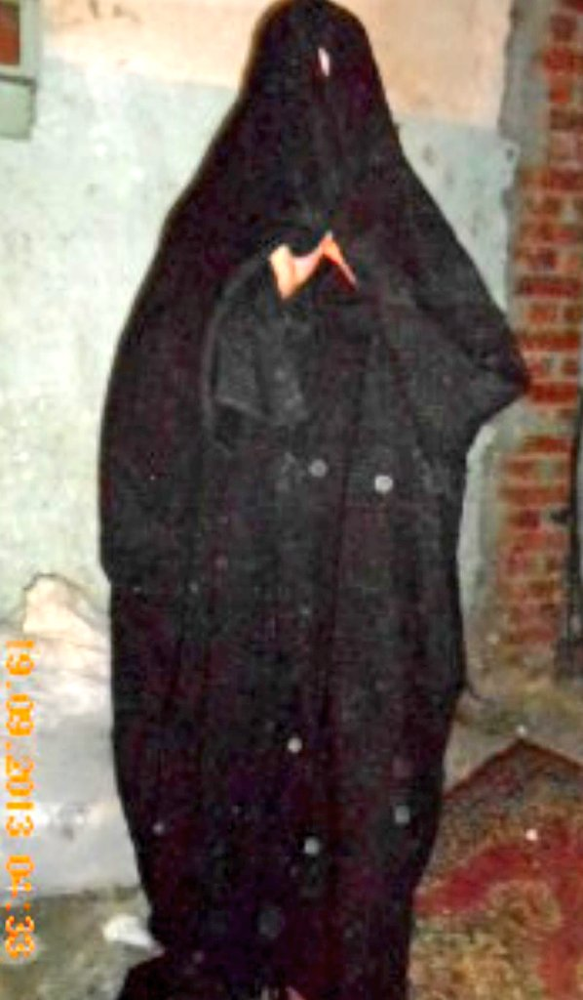

Welcome, my friend, let's get to know the personalities and fashion in Egypt
Popular costumes in Aswan
Com Col
Clothes that old women are famous for are called "sleeves" and named by this name because they have long sleeves that the palm of the hands cannot be seen. It was famous for the people of "treasures" and also "Daboud" in ancient Nubia, as well as "the apartment", which is a headscarf worn on the head.
Keda
The men in Nubia are famous for the "Keda" outfit, which is a long white galabiya and a white turban on the head wrapped in a specific way that differs from the Saidi turban.
garjar
The women in Nubia are famous for the "garjar", which is a colored galabiya with a transparent black layer of cloth over it that hangs until it drags on the ground, and that is why it was called by this name. "Shbar", which is the veil that was characterized by black in the past, and now it has become colored.
Popular costumes in Luxor
Alhebra
Al-Habra is the official dress for the women of Upper Egypt, especially the Luxor, and it is a cover that covers the woman from her head to her feet. Women wear "Al-Habra" to protect them from the looks of men.
municipal robe "gelbab"
For men in Luxor, the official uniform is a municipal robe, which is loosely tailored to fit the body of its owner. A light garment is worn underneath it called “tashita” to add more grace and beauty to the robe. Even now, the old and the young are clothed with youth.
Popular costumes in Upper Egypt
Upper Egypt robes "galabia"
The diameter of the Saidi robes in Egypt at the present time ranges from 20 to 35 cm, and it does not have a hollow opening on the left side, but rather two “sealed” pockets. With regard to sewing the canal robes, the summer robes are sewn entirely with a sewing machine, while the winter or autumn ones are completely sewn by hand.
Keffiyeh and cashmere shawl
they wear the keffiyeh or the woolen “lace” only in winter, and it is placed on the shoulder or wrapped on the head or over the aunt. As for the cashmere shawl, there is a heavy type of it that is worn in winter, and among it is a summer shawl that is worn only in two centers in Qena Governorate, which are Dashna and Naga Hammadi.
Elbarda
It is a piece of woolen cloth that covers the woman from head to toe, so nothing appears from it, and she is keen to wear it even in front of relatives, according to the customs and traditions of the Upper Egypt, and despite the disappearance of the “apartment” from many areas in Upper Egypt, but the women of Qena are still keen to wear it in the summer winter.

Popular costumes in bedouins of egypt "sinawy"
The headband and the dress
The Bedouin man in Sinai depends on his clothes on “the ghutra, the headband, the bisht, the cloak, the galabiya, and the mudas.” This is appropriate to the nature of the climate, as he tends to wear white clothes in the summer to avoid the sun’s rays and the scorching temperatures. Men in the Bedouin community are prohibited from wearing red color at all.
Sinai cloak
Women have another conversation with clothes, and colors have a role that Sinai women do not ignore, and it is considered their guide for men, as women appear in a long, loose black dress surrounded by an embroidered belt that governs the middle area, and above her head is a black scarf that also covers her entire body, with a veil on the face decorated with ornaments that are made of copper and silver, and perhaps Sometimes gold.
Popular costumes in Red Sea Governorate "Al-Sawakny"
Com Col
"Al-Sawakni" is the official dress for the people of the Halayeb and Shalateen tribes
This "sawakni" outfit consists of four different pieces: the sudari, the jilbiya, the shirt, or as it is called there "the rug or the taqshita" and the white pants, as it is called here the "puja".
Popular costumes in Peasant clothes
Peasant robes
The farmer also has his traditional clothes that have been inherited through dozens of generations, which are medium-wide robes that are often dark ivory, light brown, or gray in color, with loose sleeves. noon.